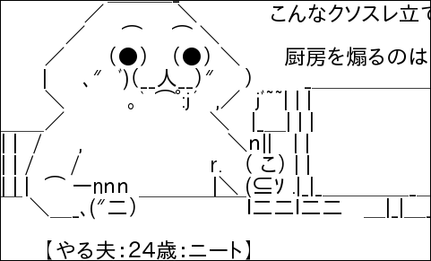

〜2009年12月中旬〜
今日は死ななかった。ビンゴ。
これでパワーマネージメントのディスプレイのスリープが原因であることが判明。
ちょっと意外な結末。
ミュージックステーションで竹内由恵が「近藤真彦CDデビュー30周年」言っていたが、
CDが生産されて30年はまだ経ってない。
Thunderbird 3でGoogle Waveを使う方法。これは便利。
3.0 Beta 4では動かないそうなので注意。
☆のアイコンがうっとうしいのでSELinuxは無効にした。
毎日同じ警告してくれても解決方法がわからないんじゃ意味がない。
まさか半分でできようとは。もしやと思った方法を試すとあっさり通った。
なるほどね。
設定を探しまくったがなんとTb3では折り返し文字数の設定が削られたようだ。
Thunderbird 3.0 - New Features and Changes - MozillaZine Knowledge Base
によると
"Wrap plain text messages at..." mailnews.wraplength (defaults to 72).
は削除されたから、変更したい場合は設定エディタでmailnews.wraplengthを
いじれということらしい。
このdefaultが0(折り返さない)ならいじる必要ないけどねえ。
updateをさぼってたので大分たまった。やはり例のメッセージが出た。
Transaction Check Error: installing package kernel-2.6.31.6-166.fc12.i686 needs 10MB on the /boot filesystem installing package tcsh-6.17-4.fc12.i686 needs 10MB on the /boot filesystem installing package tigervnc-server-1.0.0-3.fc12.i686 needs 10MB on the /boot filesystem Error Summary ------------- Disk Requirements: At least 10MB needed on the /boot filesystem.
kernelだけ個別にupdateしたら残りは文句も言わずに進んだ。
なんとも変な挙動だな。
昨日うまくいったかにみえたyum updateだが再起動してみると、
GRUBと表示したきり立ち上がらない。
ネットインストール用のディスクでレスキューしてもどうにもならないので、
/boot問題もあるし再インストールすることにした。
とりあえずはディスクの内容は見えるのでバックアップは取ることができた。
で、ネットインストールなんだけど、proxyの設定が効かないのかこれもうまくいかず。
手元には日経Linuxの付録DVDもあるのでこれを使いたいところだが、
対象のラックマウントのPCにはCDドライブしかないので役立たず。
どうしたもんかと思案に暮れていると、
LiveCDからインストールする方法があることがわかった。
これでext4の/だけにしてインストールできた。1.9GBとかなりスリム。
開発環境がなにも入らなかったけど、まあ必要なものだけ入れればいいしね。
かえってよかったかもしれない。/boot問題も解消してしまった。
convertで適当に。
% convert -size 480x360 xc:white -font ipagp-mona.ttf -pointsize 24 \ -draw "text 0,0 '`cat yaruo.txt`'" -trim \ -bordercolor black -border 1 yaruo.png

いつのまにか21Bなる解が。
0B/10B/9B, 0B/10B/10B, 0B/7B/13Bの解はわかったけど、うーむ。
こう短い解でもなぜか同じバイト数になるんだよね。不思議。